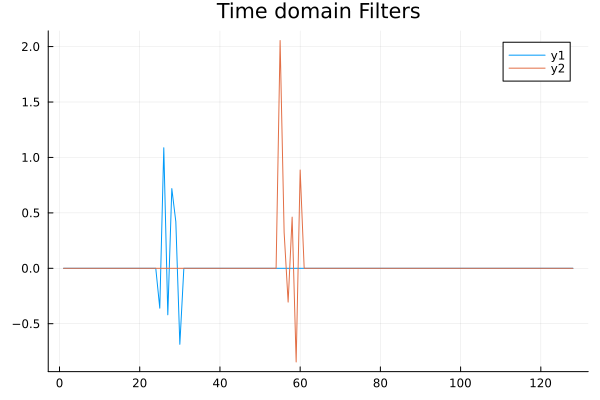
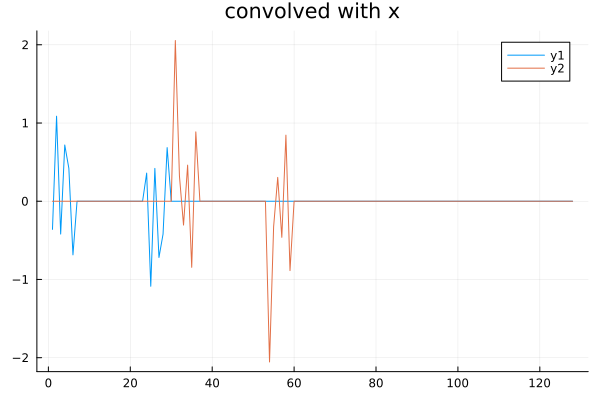
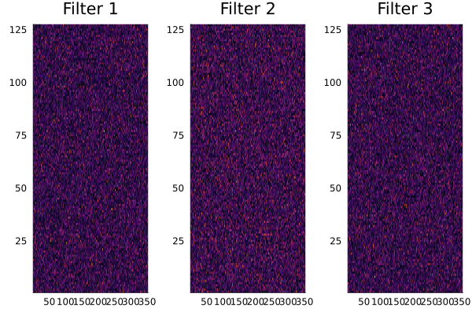
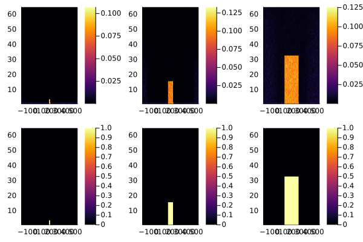
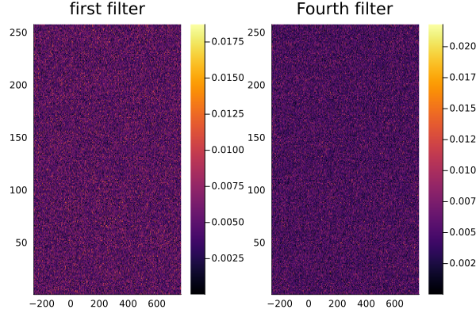
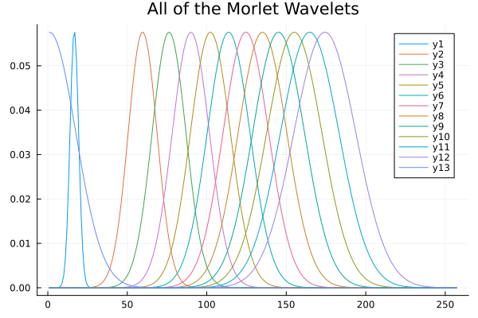
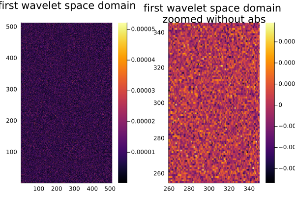

ConvFFT type
The core type of this package. As a simple example in 1D:
julia> using FourierFilterFlux, Plots, FFTW, Flux, LinearAlgebra, Random
julia> Random.seed!(1234);
julia> w = zeros(128,2); w[25:30,1] = randn(6);
julia> w[55:60,2] = randn(6);
julia> ŵ = rfft(w, 1);
julia> W = ConvFFT(ŵ,nothing,(128,1,2))
ConvFFT[input=((128,), nfilters = 2, σ=identity, bc=Periodic()] # 130 parameters
plot(W, title="Time domain Filters", dispReal=true, apply=identity, vis=1:2)
So we've created two filters with small support and displayed them in the time domain (note that this has been done with a Plot Recipe). Applying this to a signal x, which is non-zero at only the two boundary locations:
julia> x = zeros(128,1,2);
julia> x[105,1,2] = 1; x[end,1,2] = -1; # positive on one side and negative on the other
julia> r = W(x)
128×2×1×2 Array{Float64, 4}:
[:, :, 1, 1] =
0.0 0.0
0.0 0.0
⋮
0.0 0.0
0.0 0.0
[:, :, 1, 2] =
-0.359729 -2.08167e-17
1.08721 -1.38778e-17
⋮
1.27045e-17 -1.249e-16
-9.26904e-17 -2.77556e-17plot(r[:,:,1,2],title="convolved with x")
Note that x has two extra dimensions; the second is the number of input channels and the third is the number of examples. The output r=W(x) has three extra dimensions, with the new dimension (the second one) varying over the filter. Because the default setting assumes periodic boundaries, we get a bleed-over, causing what should be exact replicas of the filters to give the difference between adjacent values. We can change the boundary conditions to address this, e.g. Pad(6)
julia> W = ConvFFT(ŵ,nothing,(128,1,2),boundary= FourierFilterFlux.Pad(6))
┌ Warning: You didn't hand me a set of filters constructed with the boundary in mind. I'm going to adjust them to fit, this may not be what you intended
└ @ FourierFilterFlux ~/work/FourierFilterFlux.jl/FourierFilterFlux.jl/src/FourierFilterFlux.jl:175
ConvFFT[input=((128,), nfilters = 2, σ=identity, bc=Pad(6,)] # 142 parameters
julia> r =W(x); size(r)
(128, 2, 1, 2)plot(r[:,:,1,2],title="convolved with x")and now we have a positive copy and a negative copy of each filter. For more details, see the Boundary Conditions section. If you want to start with some random filter, rather than constructing your own, there's a simple way to do that as well:
julia> ex2Dsize = (127, 352, 1, 10);
julia> filt = ConvFFT(ex2Dsize, 3, relu, trainable=true,bias=false)
ConvFFT[input=((127, 352), nfilters = 3, σ=relu, bc=Periodic()] # 67_584 parameters
plot(heatmap(filt,dispReal=true,vis=1,colorbar=false,title="Filter 1"),
heatmap(filt,dispReal=true,vis=2,colorbar=false,title="Filter 2"),
heatmap(filt,dispReal=true,vis=3,colorbar=false, title="Filter 3"),
layout=(1,3))
Here we've created a set of real weights represented in the Fourier domain. Now let's see if these filters can be fit to various lowpass filters:
julia> using LinearAlgebra
julia> fitThis = zeros(64,352,3); fitThis[1:3,(176-3:176+3),1] .= 1;
julia> fitThis[1:15,(176-15:176+15),2] .= 1; fitThis[1:32,(176-44:176+44),3] .= 1;
julia> targetConv = ConvFFT(fitThis, nothing, (127,352,1,10))
ConvFFT[input=((127, 352), nfilters = 3, σ=identity, bc=Periodic()] # 67_584 parameters
julia> sum(norm.(map(-, targetConv.weight, filt.weight)) .^ 2) / sum(norm.(targetConv.weight) .^ 2) # the relative error
1.0039214694920346
julia> loss(m, x) = norm(m(x) - targetConv(x))
loss (generic function with 1 method)
julia> genEx(n) = [cpu(randn(ex2Dsize)) for i=1:n];
julia> opt = Flux.setup(Adam(), filt);
julia> for x in genEx(100)
Flux.train!(loss, filt, [(x,)], opt)
end
julia> sum(norm.(map(-, targetConv.weight, filt.weight)) .^ 2) / sum(norm.(targetConv.weight) .^ 2) # the relative error
0.8207500995548698
plot(heatmap(filt,vis=1), heatmap(filt,vis=2), heatmap(filt,vis=3),
heatmap(targetConv,vis=1), heatmap(targetConv,vis=2),
heatmap(targetConv,vis=3))
The top three are the fit filters, while the bottom three are the targets. So after 100 examples, we have something that passibly resembles the desired low-pass filters, though the relative error is still around 80%.
Finally, if you would rather be doing your computations on the gpu, simply use the gpu function of Flux.jl or cu of CUDA.jl:
julia> Wgpu = W |> gpu┌ Warning: No functional GPU backend found! Defaulting to CPU. │ │ 1. If no GPU is available, nothing needs to be done. Set `MLDATADEVICES_SILENCE_WARN_NO_GPU=1` to silence this warning. │ 2. If GPU is available, load the corresponding trigger package. │ a. `CUDA.jl` and `cuDNN.jl` (or just `LuxCUDA.jl`) for NVIDIA CUDA Support. │ b. `AMDGPU.jl` for AMD GPU ROCM Support. │ c. `Metal.jl` for Apple Metal GPU Support. (Experimental) │ d. `oneAPI.jl` for Intel oneAPI GPU Support. (Experimental) │ e. `OpenCL.jl` for OpenCL support. (Experimental) └ @ MLDataDevices.Internal ~/.julia/packages/MLDataDevices/33vyp/src/internal.jl:114 ConvFFT[input=((128,), nfilters = 2, σ=identity, bc=Pad(6,)] # 142 parametersjulia> x = x |> gpu;julia> Wgpu(x)[:,1,1,1]'1×128 adjoint(::Vector{Float64}) with eltype Float64: 0.0 0.0 0.0 0.0 0.0 0.0 … 0.0 0.0 0.0 0.0 0.0
FourierFilterFlux.ConvFFT — Type
# preconstructed filters w
ConvFFT(w::AbstractArray{T,N}, b, originalSize, σ = identity; plan=true,
boundary = Periodic(), dType=Float32, trainable=true, OT=Float32, An=nothing)
where {T,N}
# randomly constructed filters
ConvFFT(k::NTuple{N,Integer}, nOutputChannels = 5,
σ=identity; nConvDims=2, init = Flux.glorot_normal,
plan=true, bias = true,
dType=Float32, OT=Float32, boundary=Periodic(),
trainable=true, An=nothing) where NSimilar to Conv from Flux.jl, but does pointwise multiplication in the Fourier domain, with boundary conditions boundary, and applies the nonlinearity σ. It is worth noting that the bias is added in the Fourier domain; if you don't want a bias, set b=nothing. For the first method, the weights w should have dimension 1 greater than the size of the convolution, while for the second, k gives the size of the input (including channels and batch size), for which appropriate weights are generated in the fourier domain according to the distribution init.
Shared Arguments
σ=identity: a function to apply.dType::DataType=Float32: the data type being input. By default, it assumes both the filter and the signal are real, which allows us to use an rfft and half the (complex) coefficients we would otherwise need.OT::DataType=Float32: the output datatype, usually determined by the (space domain) type of the filters. Currently assumes that if this is complex, then the filters are analytic (so only defined for positive frequencies).plan::Bool=true: use precomputed fft plan(s), as this is a significant cost. Set this tofalseif you have variable batch/channel sizes.trainable::Bool=true: The entries are trainable as Flux objects, and so are returned in aparamscall if this istrue.boundary::ConvBoundary: determines how the edges are treated. See e.g.Pad.An::Union{Nothing,NTuple{<:Integer}}=nothing: only used if the output type is complex, so the filters are complex. In that case, it is a list of the filters which are actually real. This is included to allow for averaging wavelets which are real even for analytic wavelets. For bothwaveletLayerandshearingLayer, this is the last filter, so if there are 18 total wavelets,An=(18,).
First constructor only
w::AbstractArray{T,N}: the weights. should beD+1, with the last dimension being the total number of filters
b::Union{Nothing,AbstractArray}: ifnothing`, no bias is added. Otherwise it should be (input channels)×(output channels)
Second constructor only
k::NTuple{N,Integer}: the dimensions of the input. In the 1D case it should be three entries e.g.(132,3,100)which is (signal)×(channels)×(examples). In the 2D case it should be four entries e.g.(132,132,3,100), which is (x)×(y)×(channels)×(examples).nOutputChannels::Integer=5: the number of filters to use.bias::Bool=true: determines whether or not to create a bias.init::function=Flux.glorot_normal: The way to initialize both the bias (if defined) and the weights. Any function that results in a matrix is allowed, though I would suggest something from Flux, or one of the ones defined in this package.nConvDims::Integer: the number of dimensions that we will be doing the convolution over, askis somewhat ambiguous.
Plot Recipe
To ease displaying the weights, we have a recipe that can be used with either plot or heatmap. First, we will generate some preconstructed 1D and 2D filters to demonstrate with:
W1 = waveletLayer((256,1,5))
W2 = ConvFFT((256,256),12,boundary=Sym());ConvFFT[input=((256, 256), nfilters = 12, σ=identity, bc=Sym()] # 1_579_008 parametersThe general form of the plot is
plot(cv::ConvFFT{N}; vis=1, dispReal=false, apply=abs, restrict=(Colon(), vis)) where {N}
heatmap(cv::ConvFFT{N}; vis=1, dispReal=false, apply=abs, restrict=(Colon(), vis)) where {N}The arguments are
vis=1: a structure identifying which filters you want to display. The default value is just the first one (displaying them one at a time makes more sense in the 2D case). It is worth noting that because these are created using a rfft, this is only the postive frequencies in the first dimension (vertical in the 2D shearlet plots and horizontal in the 1D plot).
plot(heatmap(W2,title="first filter"), heatmap(W2,vis=4,title="Fourth filter"))
plot(W1,vis=:,title="All of the Morlet Wavelets")
dispReal::Bool=false: takes care of doing the correct type of fft to get the space domain filters centered; usually if this is used you also want to changeapply::Function=abs: fromabsto the identity; the default ofabsmakes the most sense in the frequency domain. You probably also want to changerestrict=nothing: to show the plot only around the support of the filter:
plot(heatmap(W2, dispReal=true,title= "first wavelet space domain"),
heatmap(W2, dispReal=true, restrict= (255:345,260:350), apply=identity,
title= "first wavelet space domain \nzoomed without abs"))